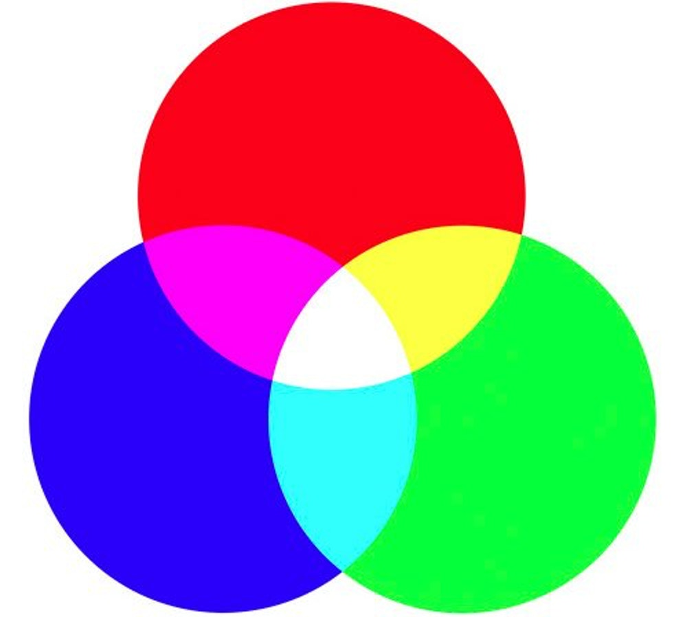

CSS Color
What you see

- A computer screen is made up of thousands of tiny squares called pixels
- When off, the screen is black because it is not emitting light
- When on, each pixel can be a different color and images can be created
- All colors you see on a computer screen are created by mixing amounts of red, green, and blue light.